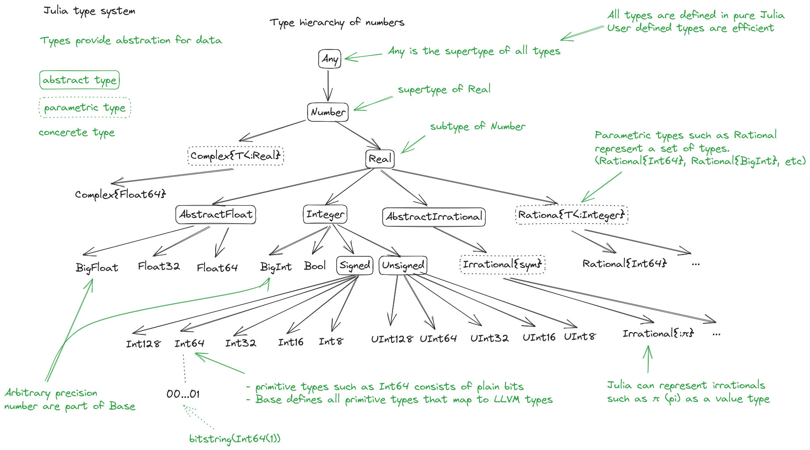

Special features of Julia¶
Questions
How does the type system in Julia work?
Is Julia dynamically or statically typed?
What is multiple dispatch?
What is code introspection?
What is metaprogramming?
Instructor note
30 min teaching
30 min exercises
Types¶
Julia is a dynamically typed language and does not require users to explicitly declare types because types are inferred and used at runtime. The sophisticated type system helps Julia to generate efficient code.
All types in Julia are defined in Julia language itself. This means that custom types are just as efficient as built-in types.
Julia’s type system is also what enables multiple dispatch, that is, choosing the most specific method of a function based on the argument types. Multiple dispatch sets the language apart from most other languages and makes it composable and fast when combined with just-in-time (JIT) compilation using the LLVM compiler toolchain.
Since types play a fundamental role in Julia’s design it’s important to have a mental model of Julia’s type system. There are two basic kinds of types in Julia:
Abstract types which define the kind of a thing, that is, represent sets of related types.
Concrete types which describe data structures, that is, concrete implementations that can be used for variables.
Furthermore, a primitive type consists of plain bits such as an integer, character or floating point number. A parametric type represents a set of types. Types in Julia form a “type tree”, in which the leaves are concrete types.

Type hierarchy of number in Julia. Adapted from Wikimedia, licensed under CC BY-SA 4.0.¶
{kind=link}
Composite types¶
New types, i.e., new kinds of data structures, can be defined with the struct keyword,
or mutable struct if you want to be able to change the values of fields in the new data structure.
To take a classical example:
struct Point2D
x
y
end
One can also specify types of individual fields (but we can’t redefine structs, try running this code!):
struct Point2D
x::Float64
y::Float64
end
A new Point2D object can be defined by
p = Point2D(1.1, 2.2)
and its elements accessed by
p.x
Constructors¶
Composite type objects also serve as constructor functions. These create new instances of themselves when applied to an argument tuple as a function. Composite types have a default constructor which gets called when creating a new object, but it’s possible to explicitly define both inner and outer constructor methods.
If we define an inner constructor method, no default constructor is provided any longer. Inner
constructors have access to a special function called new() which creates a new object:
struct Point2D
x
y
Point2D(c::Complex) = new(c.re, c.im)
end
Point2D(1, 2) # only works if first version of Point2D is also defined!
# Point2D(1, 2)
Point2D(1 + 2im)
# Point(1, 2)
For this case, it would be better to define an additional outer constructor - just like when methods are added to a function:
struct Point2D
x
y
end
Point2D(c::Complex) = Point2D(c.re, c.im)
Point2D(1, 2)
# Point2D(1, 2)
Point2D(1 + 2im)
# Point2D(1, 2)
Parametric types¶
A useful feature of Julia’s type system are type parameters: the ability to use parameters when defining types. For example (using a new name since structs can not be redefined):
struct Point{T<:Real}
x::T
y::T
end
Note that we restrict the type T to be a subtype of Real.
We can now create Point variables with explicitly different types:
p1 = Point(1,2)
# Point{Int64}(1, 2)
p2 = Point(1.0, 2.0)
# Point{Float64}(1.0, 2.0)
Parametric types introduce a new family of new types, since
any specialized version Point{T} is a subtype of Point:
Point{Int64} <: Point # returns true
Point{Float64} <: Point # returns true
Design patterns¶
Julia is a multi-paradigm language that supports multiple types of design patterns, including object-oriented patterns. However, the Julian approach is to build code around the type system, leading to a different architecture compared to object-oriented languages.
Many Julia applications are built around type hierarchies involving both abstract and concrete types. Abstract types are used to model real-world data concepts and their behaviour.
For example, we can describe a type hierarchy to model animals:
abstract type AbstractAnimal end
abstract type AbstractDog <: AbstractAnimal end
abstract type AbstractCat <: AbstractAnimal end
struct BullDog <: AbstractDog
name::String
friendly::Bool
end
struct PersianCat <: AbstractCat
name::String
huntsmice::Bool
end
We can then define functions to define the behaviour of these types. Key to this approach is that subtypes inherit behaviour of their supertypes:
get_name(A::AbstractAnimal) = A.name
get_mouse_hunting_ability(A::AbstractCat) = return A.huntsmice ? "$(A.name) hunts mice" : "$(A.name) leaves mice alone"
If we now define a cat object we can use the methods defined for its abstract supertypes:
billy = PersianCat("Billy", true)
get_name(billy)
get_mouse_hunting_ability(billy)
Refer to the “See also” section below for more reading material on code design in Julia.
Functions and methods¶
Functions form the backbone of Julia code and we can define them using the
function keyword.
Each function can have multiple methods. A method is a function defined for
specific arguments types. We can define methods using the block form or short
form syntax. Example of a function in the block form:
function sumsquare(x, y)
return x^2 + y^2
end
For short functions such as this one, we can also use the short form:
sumsquare(x,y) = x^2 + y^2
We can pass in arguments with all kinds of types:
# Int64
sumsquare(2, 3)
# Float64
sumsquare(2.72, 3.83)
# Complex{Int64}
sumsquare(1+2im, 2-1im)
# Complex{Float64}
sumsquare(1.2+2.3im, 2.1-1.5im)
Note that our sumsquare function has no type annotations. The base
library of Julia has different implementations of + and ^ which
will be chosen (“dispatched”) at runtime according to the argument
types.
In most cases it’s fine to omit types. The main reasons for adding type annotate are:
Improve readability
Catch errors
Take advantage of multiple dispatch by implementing different methods to the same function.
Extending sumsquare
What happens if you try to call the sumsquare function with two
input arguments of type Point? Try it and try to make sense of the output.
Now add a new method to our sumsquare function for the
Point type.
We decide that the summed square of two points is a new Point:
Point(p1.x^2 + p2.x^2, p1.y^2 + p2.y^2)You will need to modify both the function signature and body.
Solution
Calling the original (un-extended) sumsquare function with two
Point variables returns the error
MethodError: no method matching ^(::Point{Int64}, ::Int64).
This means that Julia doesn’t know how to take powers of this type!
One way to implement the new sumsquare method for Point types is:
struct Point{T<:Real}
x::T
y::T
end
function sumsquare(p1::Point, p2::Point)
return Point(p1.x^2 + p2.x^2, p1.y^2 + p2.y^2)
end
p1, p2 = Point(1.0, 2.0), Point(2.0, 3.0)
sumsquare(p1, p2) # returns Point{Float64}(5.0, 13.0)
Note the output, sumsquare is now a “generic function with 2
methods”.
If we solved the exercise, we should now be able to call sumsquare
with Point types. The element types can still be anything!
p1 = Point(1, 2)
p2 = Point(3, 4)
sumsquare(p1, p2)
# returns Point{Int64}(10, 20)
cp1 = Point(1+1im, 2+2im)
cp2 = Point(3+3im, 4+4im)
sumsquare(cp1, cp2)
# returns Point{Complex{Int64}}(0 + 20im, 0 + 40im)
We can list all methods defined for a function:
methods(sumsquare)
# 2 methods for generic function "sumsquare":
# [1] sumsquare(p1::Point, p2::Point) in Main at REPL[35]:1
# [2] sumsquare(x, y) in Main at REPL[14]:1
We can even define a function with no methods for documentation purposes.
function sumsquare end
Methods and functions
A function describing the “what” can have multiple methods describing the “how”.
This differs from object-oriented languages in which objects (not functions) have methods.
Multiple dispatch is when Julia selects the most specialized method to run based on the types of all input arguments.
Best practice: constrain argument types to the widest possible level, and introduce constraints only if you know other argument types will fail.
Type stability¶
To compile specialized versions of a function for each argument type the compiler needs to be able to infer all the argument and return types of that function. This is called type stability, but unfortunately it’s possible to write type-unstable functions:
# type-unstable function
function relu_unstable(x)
if x < 0
return 0
else
return x
end
end
We can pass both integer and floating point arguments to this function, but if we pass in a negative float it will return an integer 0, while positive floats return a float. This can have a dramatically negative effect on performance because the compiler will not be able to specialize!
The solution is to use an inbuilt zero function to return a zero of the same
type as the input argument, so that inputting integers always gives
integer output and likewise for floats:
# type-stable function
function relu_stable(x)
if x < 0
return zero(x)
else
return x
end
end
Other convenience functions exist to make types consistent, including:
eltype()to determine the type of the array elementssimilar()to create an uninitialized mutable array with the given element type and size.
A quick way to check for type instabilities is to use the code_warntype
macro (read below to know what a macro is). E.g.:
@code_warntype relu_stable(1)
Code generation¶
Julia was designed from the beginning for high performance and this is accomplished by compiling Julia programs to efficient native code for multiple platforms via the LLVM compiler toolchain and just-in-time (JIT) compilation. The Julia runtime code generator produces an LLVM Intermediate Representation (IR) which the LLMV compiler then converts to machine code using sophisticated optimization technology.
Interpreted languages rely on a runtime which directly executes the source code.
Compiled languages rely on ahead-of-time compilation where source code is converted to an executable before execution.
Just-in-time compilation is when code is compiled to machine code at runtime.

Adapted from “High-level GPU programming in Julia” by Tim Besard, Pieter Verstraete and Bjorn De Sutter .¶
To see the various forms of lowered code that is generated by the JIT compiler we can use several macros. Inspecting the lowered form for functions requires selection of the specific method to display, because generic functions may have many methods with different type signatures.
# Surface level AST
Meta.parse("sumsquare(1, 2)") |> dump
Meta.parse("sumsquare(p1, p2)") |> dump
# Lowered form of AST
@code_lowered sumsquare(1, 2)
@code_lowered sumsquare(p1, p2)
# Type-inferred lowered form of AST
@code_typed sumsquare(1, 2)
@code_typed sumsquare(1.0, 2.0)
@code_typed sumsquare(p1, p2)
# Lowered and type-inferred ASTs
@code_warntype sumsquare(1.0, 2.0)
@code_warntype sumsquare(p1, p2)
# LLVM intermediate representation:
@code_llvm sumsquare(1, 2)
@code_llvm sumsquare(1.0, 2.0)
@code_llvm sumsquare(p1, p2)
# native assembly instructions:
@code_native sumsquare(1, 2)
@code_native sumsquare(1.0, 2.0)
@code_native sumsquare(p1, p2)
Metaprogramming¶
We saw in the compilation diagram above that after parsing the source code, the Julia compiler generates an abstract syntax tree (AST) - a tree-like data structure representing the source code. This is a legacy from the Lisp language. Since code is represented by objects that can be created and manipulated from within the language, it is possible for a program to transform and generate its own code.
Let’s have a look at the AST of a simple expression:
Meta.parse("x + y") |> dump
It returns:
Expr
head: Symbol call
args: Array{Any}((3,))
1: Symbol +
2: Symbol x
3: Symbol y
These three symbols +, x and y are leaves of the AST.
A shorter form to create expressions is :(x + y).
We can create an expression and then evaluate it:
ex = :(x + y)
x = y = 2
eval(ex) # returns 4
A macro is like a function, except it accepts expressions as arguments, manipulates the expressions, and returns a new expression - thus modifying the AST.
We can for example define a macro to create a Wilkinson polynomial defined as follows:
Note the following pattern, we write a helper function that returns an expression and call that function from the macro. This is very useful for debugging while writing macros!
function _make_wilkinson(n)
pol = :(x - 1)
for i in 2:n
pol = :($pol * (x - $i))
end
name = Symbol(:wilkinson_, n)
return :($(name)(x) = $pol)
end
macro make_wilkinson(n)
return _make_wilkinson(n)
end
# creates the function wilkinson_5
@make_wilkinson 5
wilkinson_5(10)
To see what a macro expands to, we can use another macro:
@macroexpand @make_wilkinson 5
The output shows that a for loop has been generated:
:(Main.wilkinson_5(var"#21#x") = begin
#= REPL[17]:6 =#
((((var"#21#x" - 1) * (var"#21#x" - 2)) * (var"#21#x" - 3)) * (var"#21#x" - 4)) * (var"#21#x" - 5)
end)
Unicode support¶
Julia has full support for Unicode characters. Some are reserved for constants or operators, like π, ∈ and √, while the majority can be used for names of variables, functions etc. Unicode characters are entered via tab completion of LaTeX-like abbreviations in the Julia REPL or IDEs with Julia extensions, including VSCode. If you are unsure how to enter a particular character, you can copy-paste it into Julia’s help mode to see the LaTeX-like syntax.
function Σsqrt(Ω...)
σ = 0
for ω ∈ Ω
σ += √ω
end
σ
end
ω₁, ω₂, ω₃ = 1, 2, 3
σ = Σsqrt(ω₁, ω₂, ω₃)
It’s also reassuring to know that Julia can solve the chicken-and-egg dilemma:
problem = [:🥚, :🐔]
# 2-element Vector{Symbol}:
# :🥚
# :🐔
sort(problem)
# 2-element Vector{Symbol}:
# :🐔
# :🥚
Exercises¶
Write a composite type and a method that acts on it
Write a mutable struct called Ship with two fields: name (which is a String) and
location, which is a Point (define the Point type if needed).
Then write a function move!() which takes three arguments: a Ship object, and
two displacements, dx and dy.
Finally create a Ship object with a name and initial location, and call the move!()
method on it. Print the Ship object to see if it has moved.
Optional 1: Write an outer constructor for Ship which, instead of a Point object, takes x and y coordinates in separate arguments.
Optional 2: Write another method for the move!() where the x and y displacements are
defined by a Point type.
Solution
struct Point{T<:Real}
x::T
y::T
end
mutable struct Ship
name::String
location::Point
end
function move!(s::Ship, dx, dy)
oldloc = s.location
s.location = Point(oldloc.x+dx, oldloc.y+dy)
end
beagle = Ship("HMS Beagle", Point(1.0,2.0))
# Ship("HMS Beagle", Point{Float64}(1.0, 2.0))
move!(beagle, 2, 5)
print(beagle)
# Ship("HMS Beagle", Point{Float64}(3.0, 7.0))
# outer constructor
Ship(name, x, y) = Ship(name, Point(x,y))
vasa = Ship("Vasa", 4.0, 2.0)
# Ship("Vasa", Point{Float64}(4.0, 2.0))
# new method
function move!(s::Ship, p::Point)
oldloc = s.location
s.location = Point(oldloc.x+p.x, oldloc.y+p.y)
end
move!(beagle, Point(2,2))
print(beagle)
# Ship("HMS Beagle", Point{Float64}(5.0, 9.0))
Introspect type-stable and type-unstable functions
While the code-introspection macros produce complicated output which is hard for humans to read, some of them can be useful to write more efficient code.
@code_typedshows the types of our code inferred by the compiler.@code_warntypeshows type warnings and can be used to detect type instabilities.@code_llvmand@code_nativecan be used to see the size of the resulting low-level code (the fewer instructions the faster).
Use these macros to inspect the relu_unstable and relu_stable functions!
Observe how
@code_warntypewarns about the type instability when passing a floating point number: Julia is forced to use aUnion{Float64, Int64}type in the function body.What is the difference in the low-level code between the two functions when passing integers or floats?
Solution
The type-unstable function gives us a warning
(Body::Union{Float64, Int64} is in red in the REPL):
@code_warntype relu_unstable(1.0)
MethodInstance for relu_unstable(::Float64)
from relu_unstable(x) in Main at REPL[40]:2
Arguments
#self#::Core.Const(relu_unstable)
x::Float64
Body::Union{Float64, Int64}
1 ─ %1 = (x < 0)::Bool
└── goto #3 if not %1
2 ─ return 0
3 ─ return x
The warning is gone in the type-stable function:
@code_warntype relu_stable(1.0)
MethodInstance for relu_stable(::Float64)
from relu_stable(x) in Main at REPL[83]:2
Arguments
#self#::Core.Const(relu_stable)
x::Float64
Body::Float64
1 ─ %1 = (x < 0)::Bool
└── goto #3 if not %1
2 ─ %3 = Main.zero(x)::Core.Const(0.0)
└── return %3
3 ─ return x
There’s a big difference in the amount of low-level code generated for the type-stable and unstable functions:
; @ REPL[83]:2 within `relu_stable` define double @julia_relu_stable_841(double %0) #0 { top: ; @ REPL[83]:3 within `relu_stable` %.inv = fcmp olt double %0, 0.000000e+00 %1 = select i1 %.inv, double 0.000000e+00, double %0 ; @ REPL[83]:4 within `relu_stable` ret double %1 }; @ REPL[40]:2 within `relu_unstable` define { {}*, i8 } @julia_relu_unstable_845([8 x i8]* noalias nocapture align 8 dereferenceable(8) %0, double %1) #0 { top: ; @ REPL[40]:3 within `relu_unstable` ; ┌ @ float.jl:499 within `<` @ float.jl:444 %2 = fcmp uge double %1, 0.000000e+00 ; └ br i1 %2, label %L8, label %L7 L7: ; preds = %L8, %top %merge = phi { {}*, i8 } [ { {}* inttoptr (i64 4337979424 to {}*), i8 -126 }, %top ], [ { {}* null, i8 1 }, %L8 ] ; @ REPL[40]:4 within `relu_unstable` ret { {}*, i8 } %merge L8: ; preds = %top ; @ REPL[40]:6 within `relu_unstable` %.0..sroa_cast = bitcast [8 x i8]* %0 to double* store double %1, double* %.0..sroa_cast, align 8 br label %L7 }
Inspect a few macros
Use the @macroexpand macro to investigate what the following macros do:
@assert@fastmath@show@time@enum
Hint: You will typically need to give arguments to the macros you are inspecting. Have a look at the help page of a macro if you’re unsure how it’s used.
Solution
@macroexpand @assert 1==1
@macroexpand @fastmath 1+2
x = 1
@macroexpand @show x
x = rand(10,10);
@macroexpand @time x * x
@macroexpand @enum Fruit apple=1 orange=2 kiwi=3